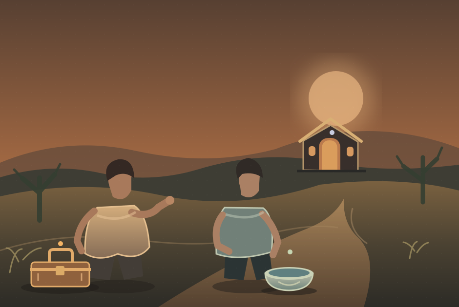
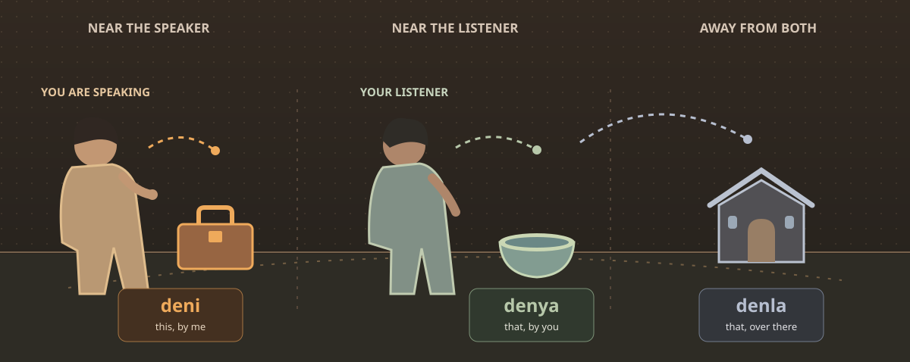

01
dor Ya karvek deni an pralor.
Put this toolkit on the table.
PLACE & POINTING · LESSON 01
Celan has three small words for pointing. The one you choose depends on where the thing is in relation to you and the person listening.
One scene. Three points of view.

Imagine you are the speaker on the left. Someone is listening beside you. Look at what belongs to each person's immediate space.

karvek deni
this toolkit, here by me
Use deni when the thing is in the speaker's immediate sphere.
Say the thing first. Then place the pointing word after it.
You can also use a pointing word on its own when everyone already knows which thing you mean.
These sentences already belong to the Celan dictionary. The highlighted pair shows the thing and its pointer together.
dor Ya karvek deni an pralor.
Put this toolkit on the table.
talaen Ya drenvor denya var I.
Give me that bowl beside you.
kes I mekor denla.
I notice that building over there.
You are speaking to a friend. The bowl is beside your friend. Which word would follow drenvor?
Choose a word to check your reading of the scene.